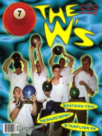

CMnexus
: Contemporary Christian culture, music, and media.
|
The W'sOn the cover
November 1998
7ball | Media coverage- Jul 1998 in 7ball "Bridging The Gap", by Derek Walker
- Oct 1998 in CBA Marketplace "News Item: The W's"
- Nov 1998 in 7ball "It's A Swing Thing", by Derek Walker
- Dec 1998 in CCM "Swing Low, Daddy O", by Lou Carlozo
- Jan 1999 in CCM "Birth of The Cool: W's Good, Devil Bad", by Lucas W. Hendrickson
- Win 1999 in FUEL "The New Sinatras?", by Jamie Lee Rake, Chris Estey
- Apr 1999 in CCM "In Concert: Supernatural Tour, World Arena, Colorado Springs, CO", by Steve Rabey
- Apr 1999 in CCM "On The Beat: Pope Visits St. Louis", by Brian Quincy Newcomb
- Sep 1999 in Campus Life "Back To Faith", by Martin Cockroft
- Oct 1999 in CCM Brasil "Swing Low, Daddy O", by Lou Carlozo
- Dec 1999 in CCM "In Concert: The Crush, Birmingham, AL", by David Mackle
- Jan 2000 in 7ball "Holy Rollin'", by Rachel L Martin
Albums & reviews:1998: Fourth from the Last Award Summary (Nominations / Wins)
Dove Awards2000 Dove Awards- Modern Rock/Alternative Recorded Song: "The Rumor Weed Song"
Billboard Music Video AwardsBooks about The W's
- "The W's" in The Encyclopedia of Contemporary Christian Music (Mark Allan Powell, 2002).
|
|